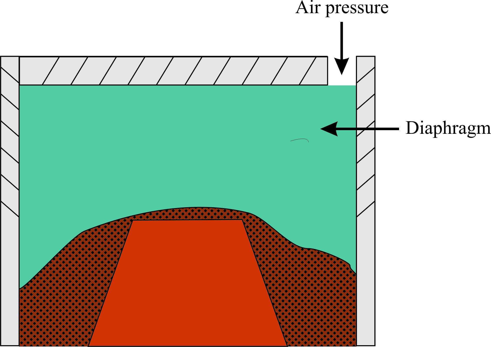
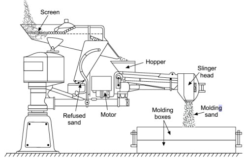

Moulding is essentially the process of making a mould. It consists of preparing the moulding mixtures and then making the mould. The general procedure for preparing moulding sand mixtures for sand moulds has already been discussed in unit-1.
Moulds are generally classified under following broad categories:
(a) Expendable moulds; (b) Permanent moulds; (c) Composite moulds
9.1.1 Expendable moulds: These are made from refractory materials which are capable of withstanding high temperatures of molten metal, such as silica sand, gypsum plaster, ceramic or similar materials mixed with various types of binders. An expendable mould is used only once because after the casting has solidified, the mould has to be broken up to remove the casting.
Examples of expendable mould include: green-sand mould, dry-sand mould, CO2 dried sand mould, shell moulds, plaster moulds, investment casting moulds, EPS. Please also refer lesson 1 special casting processes.
9.1.2 Permanent moulds: Permanent moulds are metallic moulds which are capable of maintaining their strength and stability against high temperatures of molten metals. These are designed for easy removal of castings and without breaking (collapsing) the mould. A permanent mould is used repeatedly for producing a large number of castings.
Examples of permanent moulds include: die-casting moulds, pressure casting mould, centrifugal casting mould, continuous casting moulds. Please refer lesson 2, permanent mould casting processes.
9.1.3 Composite moulds: Composite moulds are made of two or more different materials such as sand, graphite and metal. Such moulds are made to take best advantage of the special properties of various constituents of materials. These moulds have higher strength and better control on the rate of cooling of castings. Complex shaped turbine impellers are cast in composite shell moulds. Graphite and sand composite moulds are used for casting aluminium alloy torque converters.
A large number of prevalent moulding methods can be grouped in the following two categories according to
(a) materials used for mould
(b) methods used for making mould.
Following are the common types moulding methods according to the mould materials used for preparing moulds:
1. Green-sand mould: The term green-sand mould refers to the condition of a mould before pouring metal into it for casting and signifies that the mould is in the moist or damp condition (i.e, green condition) (2 to 8% water) when the metal is poured into the mould. The green-sand mould is made from a moulding mixture of silica sand, clay, additives and water. It is easy and fast to make as no baking of the mould is required before pouring metal. Therefore it is economical also. A green-sand mould mixture for casting cast iron may consist of the following constituents.
| River sand | 50 to 60% |
| Clay | 12 to 15% |
| Bentonite | 2 to 15% |
| Coal dust | 5 to 10% |
| Water | 4 to 8% |
2. Dry-sand mould: The term dry-sand mould also refers to the condition of a mould before pouring metal and signifies that the mould is completely dried by baking in an oven or furnace before the molten metal is poured into it for casting. The baking of mould is done to have more strength and a hardened and non-erodable mould face before pouring the molten metal into it. Baked moulds evolve less steam and gas during casting and therefore to get a good surface finish and dimensional accuracy on castings, dry-sand moulds are made from fine-grained sands. Dry-sand moulds are, however, costlier and hence used for large castings of steels and cast irons. A typical dry-sand mould mixture for casting cast iron may have the following composition.
| Floor sand | up to 50% |
| River sand (fine) | 20 to 25% |
| Clay | 5% |
| Saw dust or dung | 5 to 10% |
| Water | up to 10% or more |
3. Skin-dried mould: These are made from the green sand, and the mould surface or face is dried to a certain depth (12.5 to 25 mm) either by storing in hot air or by gas torches. The use of resin, linseed oil, molasses or corn flour as binder in the facing sand in these moulds gives a very hard surface to the mould after drying. These moulds are used for large castings of cast irons and steels.
4. Loam sand mould: These moulds are used for extremely large castings which are symmetrical in shape. A rough skeleton of the mould is first made using bricks reinforced with iron plates (Figure-1). Loam sand is daubed over and plastered on the brick skeleton to make the mould face, which is later shaped to size and contour with a sweep pattern. A refractory facing is later given to the mould face and the mould dried to get a strong mould. A loam sand mortar is prepared using clay, coarse silica sand, chopped straws, manure and fire clay milled with water. Large size cylinders, kettles, gear blanks, etc. are made by loam sand moulding.
Figure 1: Sample Loam Sand Mould prepared using sweep pattern
5. Plaster mould: A plaster mould is prepared by pouring out gypsum slurry, on a metallic (brass) match plate pattern (one side of pattern) (Figure - 2) and is allowed to set on the pattern (in about 15 minutes) The gypsum slurry comprises gypsum plaster, silica flour, silica sand and water. Similarly the other half of the mould is prepared by using the other side of the pattern. Both the mould halves are later dried at 120 to 260oC in the oven and the complete mould is finally prepared by clamping the two mould halves. These moulds are used for precision castings of aluminium, zinc, copper and magnesium base alloys. These moulds have low permeability and hence need special care for the escape of gases evolved during casting. Please refer lesson 1, plaster moulding casting process.

Figure 2: Plaster mould preparation
6. Carbon dioxide hardened mould: The carbon dioxide (CO2) process is essentially a sand moulding process where the sand-mix does not contain any oil, resin, or clay as the bonding agent. This eli-minates the use of driers and the heating cycle. The moulds are prepared from a clean and dry silica sand with 3 to 5% by weight of sodium silicate solution (an inorganic binder which is a viscous fluid), and moisture up to 3%. The sand particles get coated with a thin film of the binder. This sand-mix has a very high flowability to fill up corners and intricate contours. The sand is hardened by passing CO2 for about one minute (Figure 3).
The sand mixture is packed around the pattern in a flask in the usual manner and gassing of carbon-di-oxide is done for 15 to 30 seconds before removing the pattern from the sand (Figure (a-b). The CO2 reacts with sodium silicate, forming a weak acid that hydrolyzes the sodium silicate (Na2O, SiO2), which with water (in the mould) forms a silica jel, which is a cement-like material and binds the sand grains together giving strength and hardness to the mould.
Na2SiO3 + CO2 + H2O -> Na2CO3 + SiO2 + H2O Silica jel
CO2 hardened moulds are used for casting both ferrous and non-ferrous metals and preferred for casting thin sections such as sharp corners and cooling fins on a heat exchanger.
Advantage Carbon dioxide hardened mould
1. This process gives a firm mould wall with less wall movement.
2. CO2 hardened moulds and cores can be stored for a longer period.

Figure 3: Methods of gassing a mould with carbon dioxide
Note: Wood flour, coal dust, pitch or graphite is added to mould sand mixture to increase collapsibility. The CO2 hardened cores are also made in a similar way.
7. Permanent mould or metallic mould: These moulds are called permanent moulds because of their very long working life and yield a large number of castings. These moulds are made of grey cast iron, steel, graphite and refractory metal alloys. Moulds are usually made in two halves which are joined together to form a complete mould, These moulds give higher dimensional accuracy, better surface finish and high production rate of castings generally weighing less than 25 kg. They also promote finer grain structure in the castings because of their faster cooling of the cast metal. The metallic moulds, however, provide a chilling effect on the casting surface rendering it hard. These moulds are generally used for casting nonferrous alloys with lower melting points. Please refer lesson 2, permanent mould casting processes.
8. Shell moulds: These moulds are prepared by pouring a mixture of sand and thermosetting resin over the heated surface of a metallic pattern, which results into the formation of a thin and rigid layer or shell of uniform thickness around the pattern, which, when separated from the pattern surface, forms one part of the shell mould and two such parts (or shells) are joined together to form the complete shell mould. The process of making a shell mould is discussed in lesson 1, shell mould casting process. The assembly of pattern is heated from 175 to 370oC and later sprayed with a silicon release agent to help easy removal of mould shell (to be made) from the pattern. The shell thickness is kept usually between 5 and 10 mm and is controlled by the time the pattern is in contact with the moulding mixture.
1. Open mould method: In this method the entire mould is made in the foundry floor sand bed without using any top or cope mould box. The upper surface of the mould is thus open to atmosphere. Flat products like floor plates, grills, railings, weights, large flywheels and other products with flat top are cast by this method.
2. Floor moulding method: In this method foundry floor sand bed is used as a drag. A two-piece pattern is used, half of it is fully embedded in the floor sand and its top face is levelled by compacting sand around the pattern. The upper half of the pattern is then placed over the sand-embedded pattern half and the assembly enclosed with a cope flask. Sand is filled in the cope flask. It is used for casting products which are very large in size.
3. Bench moulding: Bench moulding is carried out on a working bench using small size flasks and hence the method is suitable for making small moulds (Figure 4a). The moulder works while standing. A wooden moulding board is always used to support the moulds filled with sand. When a number of moulds, one above the other, are made using small boxes and having a common sprue to feed metal the process is called stack moulding (Figure 4b).

Figure: 4 (a) Box bench moulding (b) Stack moulding using 3 moulds and common sprue
4. Plate moulding: It employs a metallic pattern consisting of a flat match plate with portions of a pattern permanently attached on both sides of the plate as shown in Figure 5 . The plate carries runners built in it and withdrawal of pattern is easy and quick as the plate (and pattern) overlaps the walls of the mould boxes. Moulds for several identical parts of small size can be made using a number of patterns. The match plate with pattern is clamped with mould boxes for moulding purpose.
Figure 5: Plate moulding using match plate pattern used for making six castings in one go
5. Pit moulding: Large castings that may not be accommodated in mould boxes are moulded in pits made by digging the floor in foundry. The pit is lined with bricks or concrete and the desired shape of the mould is given by using a pattern. The bottom of the pit carries a well-rammed layer of cinder to allow escaping of gases during casting. The cope flask is placed over the pit containing the pattern. The cope is filled with sand and compacted and later provision of pouring sprue and riser is made in the cope sand. After lifting the cope, the pattern is removed from the sand bed (housed in the pit) and the cope placed back in position on the pit to make the mould ready for pouring.
6. Flaskless moulding: When properly bonded and high strength moulding sands (not less than 185 kPa in green state) are used and adequately rammed (ramming pressure up to 15 MPa) around the pattern, moulded sand mass acquires adequate strength to maintain the structure of mould. The process eliminates the need of moulding flasks. It is used for making gas stove grills, brass valve bodies, malleable iron pipe fittings.
7. Vacuum Moulding: Uses sand mould held together by vacuum pressure rather than by a chemical binder. The term "vacuum" refers to mould making rather than casting operation itself. Developed in Japan around 1970.
Advantages of Vacuum Moulding:
1. Easy recovery of the sand, since no binders
2. Sand does not require mechanical reconditioning done when binders are used
3. Since no water is mixed with sand, moisture-related defects are absent.
Disadvantages Vacuum Moulding:
1. Slow process
2. Not readily adaptable to mechanization
8. Machine moulding: Hand moulding is a slow and laborious process and is suitable for large-sized castings which have to be produced in small numbers. Further manual moulding gives variable hardness to the rammed mould (Figure 6). For mass production of relatively small-sized parts, it is necessary to use machines for performing various moulding steps to obtain better quality moulds. The most important basic function performed by a moulding machine is the ramming or compaction of moulding sand.
Figure 6: Hand ramming process of mould preparation and corresponding hardness isoforms obtained within the moulding sand by this method. Un-uniform compactness and hardness throughout the mould
Mould making machines are basically of three types:
(i) Squeezing: Squeeze moulding machine utilizes pneumatic pressure for ramming the sand in the mould. The pressure is applied through a platen or a squeeze head, as shown in Figure 7. The moulding flask is placed on the match plate pattern; it is then filled with moulding sand, and a squeeze platen which is attached to the machine is allowed to come on the top of moulding flask. The size of squeeze platen is slightly smaller than the inside dimension of the moulding flask. A uniform pressure is applied on the platen by either moving it down inside the flask or by moving the match plate-flask assembly upwards. The compactness of sand is highest at the surface of the plate while it reduces towards the pattern (Figure 7). In order to achieve almost uniform compactness of sand around the pattern, the squeeze plate may be provided with a diaphragm to obtain uniform sand compactness around the pattern [Figure 8]. Both parts of the mould can be formed at the same time if the depth is not too great. This type of machine is useful for small castings.

Figure 7: Squeezing process of mould preparation and corresponding hardness isoforms obtained within the moulding sand by this method. Top layers are more compacted than lower layers

Figure 8: Flexible diaphragm squeezing process of mould preparation. Uniform compact ness is obtained along the contours of pattern
(ii) Jolting: Jolt moulding machine provides jolts to the machine table. A match plate pattern is fitted to the machine table, on which a moulding flask is placed. Sand from a hopper fills the flask and the machine is started. The machine table (along with a pattern plate and sand-filled moulding flask) rises to a certain height and has a free fall onto the base of the machine. This jolting action forces the sand to get compacted into the mould. The lifting and falling action is repeated till the required mould hardness is achieved. The sand near the pattern gets greater compactness compared to sand in the top layers (Figure 9). This type of moulding machine is useful for ramming when pattern has many horizontal surfaces. The machine operation is quite noisy.
Figure 9: Jolting process of mould preparation and corresponding hardness isoforms obtained within the moulding sand by this method. Bottom layers are more compacted than top layers

Figure 10: Jolting – Pattern Drawing machine (This figure is only for concept understanding.)
(a) Drag mould box is placed on the pattern plate forming part of rocker arm. The mould box is sand filled and compacted by jolting. Top of the drag mould is covered with a plate which is clamped to the mould.
(b) Mould is rolled over by 180o with the help of rocker arm. The draw table rises up and the mould is placed on the draw table. Mould is dry. Vibrator raps the pattern as the draw table comes down slowly, separating the mould from the pattern.
(iii) Sand slinger: Sand slinger is the moulding machine in which particles of moulding sand are thrown on the pattern with a certain velocity (up to 50 m/s). The prepared moulding sand is picked up by the elevator buckets from the sand bin and dropped on the belt conveyor (Figure 12). From there it is made to fall on the high-speed rotating impeller blades and a certain velocity is imparted to the particles. High speed particles are passed through a tube to be directed towards the pattern. In this way, the mould having uniform high hardness is prepared layer-wise with consistent packing and uniform ramming (Figure 11). Sand slinger can deliver large quantities of sand rapidly and are especially beneficial for ramming big moulds.
Figure 11: Sand slinger process of mould preparation and corresponding hardness isoforms obtained within the moulding sand by this method. Uniform ramming is obtained from top to bottom

Figure 12: Sand Slinger (This figure is only for concept understanding.)
| Hand Ramming | 1. Variable hardness, Laborious and slow. 2. Manual labour required. 3. Initial cost low. |
|---|---|
| Squeezing | 1. Top layers more compacted than lower layers. 2. Best for shallow flasks and small patterns. |
| Flexible diaphragm squeezing | 1. Uniform compactness along the pattern contour. 2. Best for contoured pattern |
| Jolt ramming | 1. Top layers less compacted than lower layers. 2. Noisy. 3. Best for horizontal surfaces |
| Sand slinger | 1. Uniform ramming. 2. Initial cost high. 3. Fast operation. |

Figure 13: Comparison of mould hardness variation with flask depth for the three machine mould making methods
| Lecture 8 |